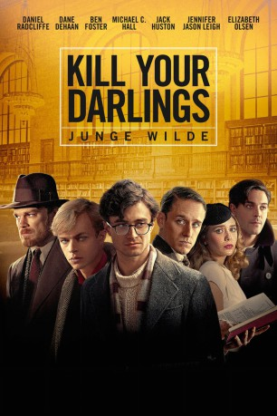

#3123 Kill Your Darlings - Junge Wilde
Alternativ: Kill Your Darlings
 
 IMDB-Wertung: 6.5 / 10
IMDB-Wertung: 6.5 / 10  Metascore: 65
Metascore: 65 
1944: Das Leben des jungen Allen Ginsberg wird auf den Kopf gestellt, als er sich kurz nach Beginn seines Studiums an der Columbia University in New York mit seinem Kommilitonen Lucien Carr anfreundet, der nicht nur unglaublich cool, sondern auch sehr attraktiv ist. Lucien führt Allen in seine unkonventionelle Welt ein und macht ihn mit William Burroughs und Jack Kerouac bekannt. Die vier schriftstellerisch ambitionierten jungen Männer fühlen sich durch die Regeln der Gesellschaft und des Literaturbetriebs eingeengt. Sie missachten die Traditionen und wollen bewusst etwas ganz Neues kreieren. Doch der Ex-Professor David Kammerer, der unsterblich in Carr verliebt ist und mit diesem so etwas wie eine Affäre hat, reagiert eifersüchtig auf die neue Freundschaft seines Schützlings mit Allen. Es kommt zu Spannungen, die sich schließlich in einer blutigen Tat entladen...
Jahr: 2013
Dauer: 103 Minuten
FSK: 16
Land: USA Studio: Sony Pictures ClassicsTonspuren: DTS - ,
Untertitel: Deutsch,
Auflösung: 1080p (1920x800) Größe: 5806 MB
Genre: Thriller, Drama, Liebe, Biographie
Regisseur: John Krokidas
Drehbuch: Austin Bunn, Austin Bunn, John Krokidas
Soundtrack: Nico Muhly
Darsteller:
 Daniel Radcliffe als Allen Ginsberg
Daniel Radcliffe als Allen Ginsberg Dane DeHaan als Lucien Carr
Dane DeHaan als Lucien Carr Michael C. Hall als David Kammerer
Michael C. Hall als David Kammerer Jack Huston als Jack Kerouac
Jack Huston als Jack Kerouac Ben Foster als William Burroughs
Ben Foster als William Burroughs David Cross als Louis Ginsberg
David Cross als Louis Ginsberg Jennifer Jason Leigh als Naomi Ginsberg
Jennifer Jason Leigh als Naomi Ginsberg Elizabeth Olsen als Edie Parker
Elizabeth Olsen als Edie Parker John Cullum als Professor Steeves
John Cullum als Professor Steeves Erin Darke als Gwendolyn
Erin Darke als Gwendolyn- Craig Chester als Businessman
- Zach Appelman als Luke Detweiler
 David Rasche als Dean
David Rasche als Dean- Quinlan Corbett als Billeting Officer
- Dawn Newman als Jazz Singer
- Leslie Meisel als Edith Cohen
- Sarah Hollis als Harlem Club Patron
 Nicole Signore als Page
Nicole Signore als Page- Olen Holm als Sailor
- Michael Cavadias als Ray Conklin
- Matt Giroveanu als Luke's Friend #1 , uncredited
 Kyra Sedgwick als Marian Carr , uncredited
Kyra Sedgwick als Marian Carr , uncredited- Kevyn Settle als Norman , uncredited
 Brenda Wehle als Permissions Librarian
Brenda Wehle als Permissions Librarian- Lenore Harris als DA Secretary
- Mark Ethan als Campus Guard
- Clancy O'Connor als Tour Guide
- Jon DeVries als Mr. Burroughs
- Jonathan Cantor als Ogden Nash , uncredited
- Nick Diamantis als Merchant Marine , uncredited
- Sean Grady als Barfly , uncredited
- Anna Kuchma als Interracial Couple, Girl , uncredited
- Colin Michael Walker als Columbia Classmate , uncredited
- Peter Waluk als Drunk Student , uncredited
Datei: X:\2013(I-M)\Kill Your Darlings - Junge Wilde (2013, FSK16, 1920x800).mkv seit 01.02.2016
Festplatte: HD 2013(I-Z)-2014(A-Z)
 Es gibt insgesamt 89 Filme in der Gruppe '2013(I-M)'
Es gibt insgesamt 89 Filme in der Gruppe '2013(I-M)'